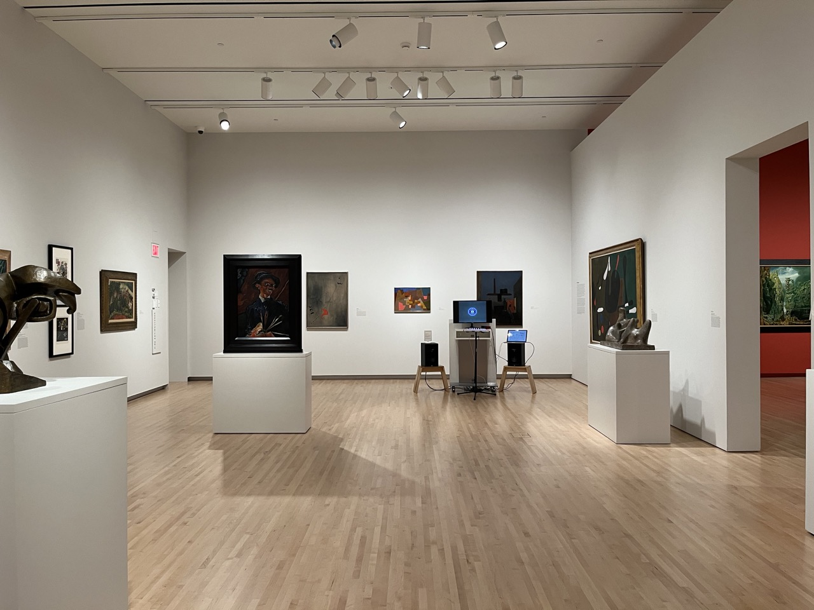

Time-Based
Museum Installation: "Singularity Synth"
Singularity Synth is an interactive audiovisual installation at the Mildred Lane Kemper Art Museum at Washington University in St. Louis. The installation displays a video, and parameters of the video can be controlled via a MIDI controller. These parameters include both audio and visual aspects such as RGB channel mixing, a kaliedoscope, and
Made with Max MSP
Motion Graphics
Music's Elite Seat
A mock promotional video for the podcast Music's Elite Seat, hosted by Dan Lewis
Made with After Effects, backing track composed in Logic Pro
How does sound work?
An interactive demo explaining some of the basic properties of sound
Made with After Effects and Figma
Bounce Back from Burnout
A promotion video for a campaign raising awareness of burnout
Made with After Effects